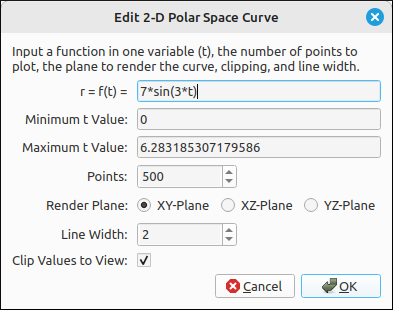
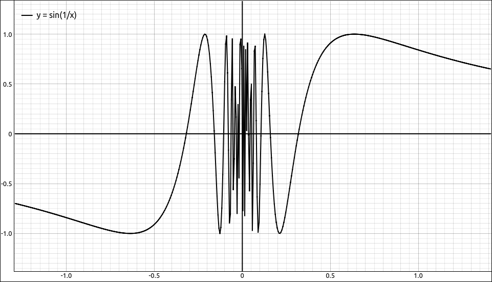
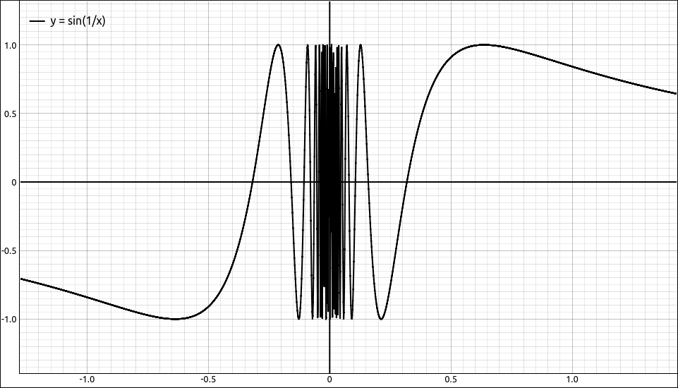
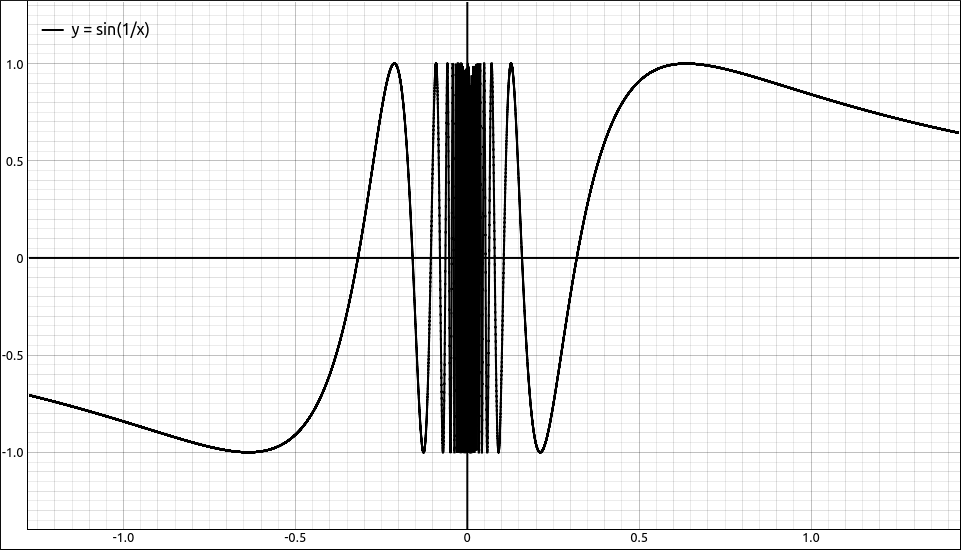
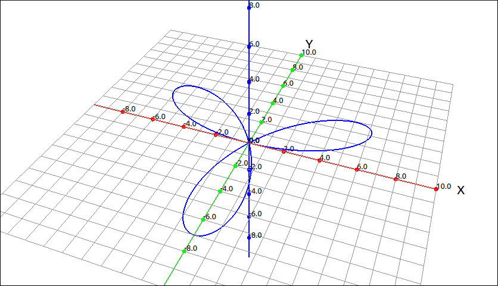
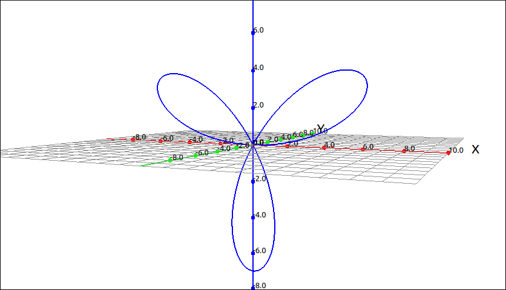
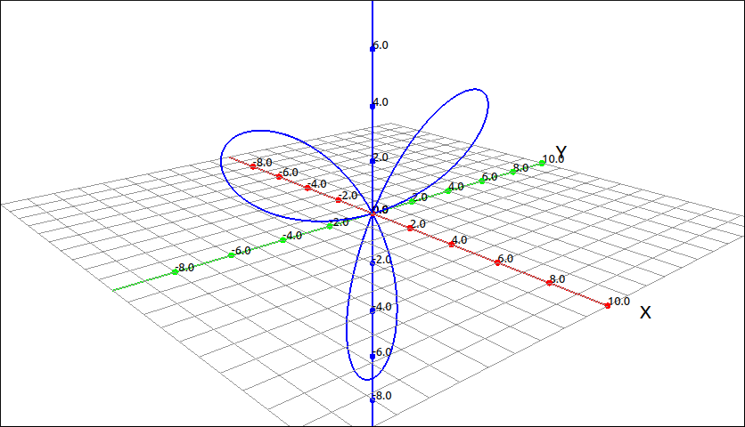

2-D Polar Space Curve#
Description#
This type graphs a polar function of the form \(r = f(t)\) as a space curve in 3D. These are easy to define parametrically but we included this option for user convince and to save them a couple steps. The independent variable must be t. All other variables outside the set of 3D variables (x, y, z, p, t, u, and v) are considered constants. This option allows the user to select the coordinate plane the curve is plotted in, either xy, xz, or yz planes.
Insert/Edit Dialog#
The Insert/Edit Dialog for this type is shown below.

2-D Polar Space Curve Dialog Box#
Below the expression that are options for the minimum and maximum t values, the number of points to use for the plot, the render plane, the line width, and clipping.
Options#
Minimum t Value#
This is the beginning t value for the plotting of the polar curve.
Maximum t Value#
This is the ending t value for the plotting of the polar curve.
Points#
This program was built with the goal of quick graphics, for this reason we do not use adaptive methods to graph curves (which give better images but are slower to plot) we simply take a number of evenly-spaced points over the domain of the graphics region. The number of points you select are the number of evaluations done over the graphing range. If you want more resolution to the plot, simply increase the number of points. As expected, the larger number of points used will slow down animations, zooming, and translations of the graphics view. The default value for most of the curves in this program is 500 points, which is good for most reasonably smooth curves.
For example, if we graph \(\sin(1/x)\), syntax sin(1/x) with 500 points the plot is the following,

\(\sin(1/x)\) using 500 Points#
If we change the number of points to 2000 we get,

\(\sin(1/x)\) using 2000 Points#
and if f we change the number of points to 10000 we get,

\(\sin(1/x)\) using 10000 Points#
Render Plane#
This is the plane that that polar curve is plotted.
Line Width#
The line width is simply the width of the line used for the plot. The default value for most of the curves in this program is 2, which is good for viewing the curve in the program interface and for exporting to images.
For example, if we graph
cos(x)cos(t) + t^2a*sin(b*x + c)
with line widths of 1, 2, and 5, respectively we get,

Line Widths Example#
Clip Values to View#
When clipping is selected portions of the plot that are outside the viewing cube are clipped (that is, removed). This helps keep the image manageable and also allows the user to translate surfaces into the clipping planes to help visualize the inside of some surfaces.
Example#
If we plot \(7 \sin{\left(3 t \right)}\) in the xy-plane we get,

2-D Polar Space Curve Example in the XY-Plane#
in the xz-plane we get,

2-D Polar Space Curve Example in the XZ-Plane#
and in the yz-plane we get,

2-D Polar Space Curve Example in the YZ-Plane#